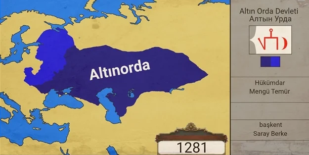
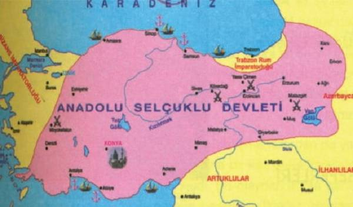
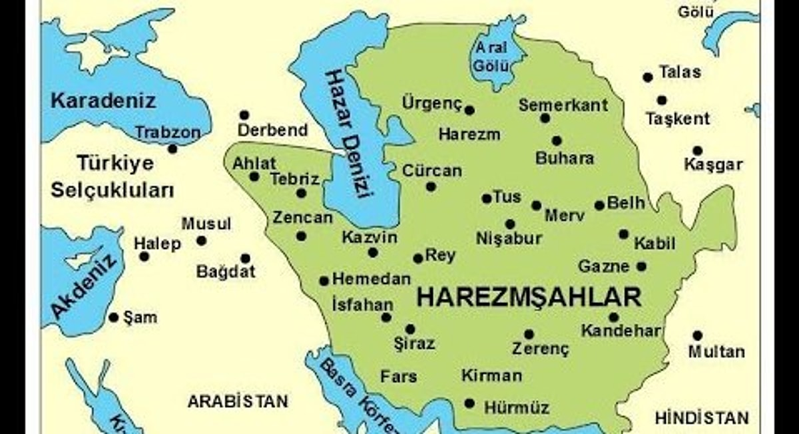
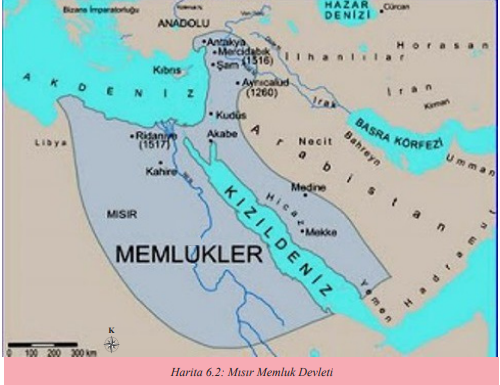
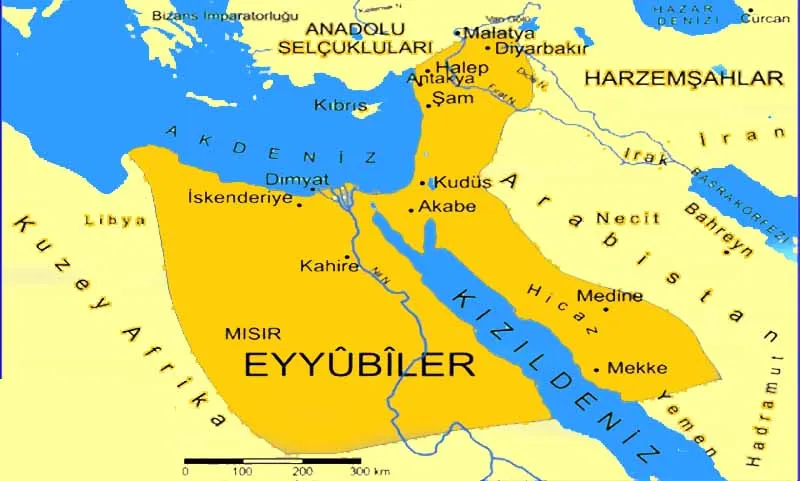
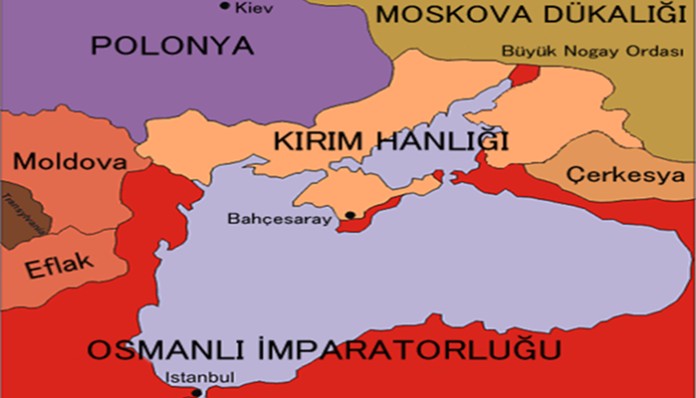
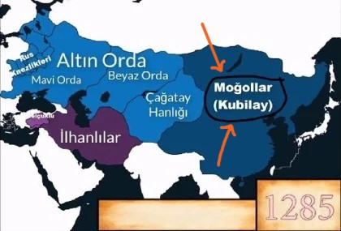
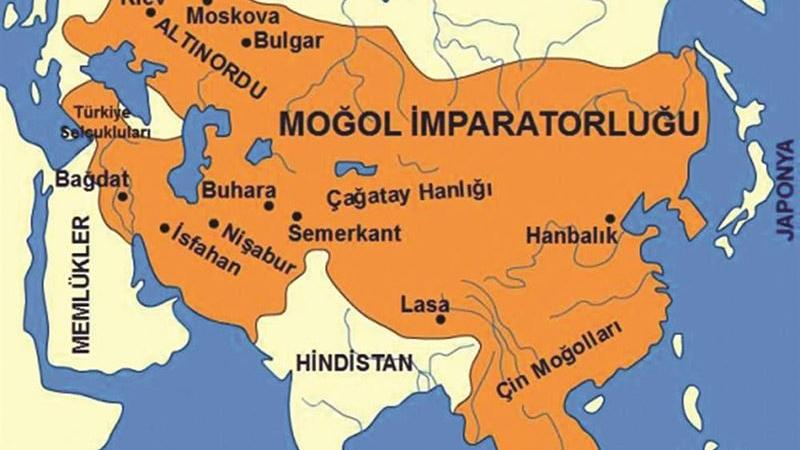

Altın Orda Devleti

Altın Orda Devleti - Kısa Tarihi
Altın Orda Devleti, 13. yüzyılda Cengiz Han’ın torunu Batu Han tarafından kurulan ve Doğu Avrupa’da
hüküm süren güçlü bir Türk-Moğol devletiydi. Bu devlet, İslamiyet’i benimseyerek kültürel ve ticari
açıdan Altın Çağ’ını yaşadı. Rus knezliklerini etkisi altına alarak bölgede önemli bir siyasi güç
oldu.
Yenilikçi ticaret yolları ve yönetim sistemiyle tanınan Altın Orda, Türk kültürünün bölgeye
yayılmasında önemli bir rol oynadı.
Anadolu Selçuklu Devleti

Anadolu Selçuklu Devleti - Kısa Tarihi
Anadolu Selçuklu Devleti, 13. yüzyılda Anadolu’da Moğol istilalarıyla karşı karşıya kalsa da bölgenin
ekonomik ve kültürel merkezlerinden biri olmayı sürdürdü. 1243’teki Kösedağ Savaşı’nın ardından
İlhanlılara bağımlı hale gelmiştir. Ancak, ticaret yollarını kontrol ederek refahını
korumuştur.
Konya ve Kayseri gibi şehirler, o dönemde bilimin ve sanatın merkezi haline
gelmiştir.
Harzemşahlar Devleti

Harzemşahlar Devleti - Kısa Tarihi
Harzemşahlar Devleti, 13. yüzyılın başlarında Orta Asya’da hüküm süren bir Türk-İslam devletiydi.
Sultan Alaaddin Muhammed Harzemşah liderliğinde güçlenen bu devlet, Cengiz Han’ın Moğol ordularıyla
yapılan çatışmalarda büyük bir mücadele verdi.
Harzemşahlar, Moğol istilaları nedeniyle
yıkılmış olsa da, Türk-İslam kültürünün korunması için önemli bir miras bırakmıştır.
Memlükler

Memlükler - Kısa Tarihi
Memlükler, 13. yüzyılda Mısır’da kurulan ve Eyyubilerden bağımsız hale gelen bir Türk devleti olarak
tanınır. 1260 yılında Ayn Calut Savaşı’nda Moğolları yenerek İslam dünyasını büyük bir tehditten
kurtarmışlardır.
Mısır ve Suriye bölgelerinde Türk askeri kültürünü yaşatmış, İslam
dünyasında önemli bir siyasi güç olmuşlardır.
Eyyubiler ve Türk Etkisi

Eyyubiler ve Türk Etkisi - Kısa Tarihi
Eyyubi Devleti, 13. yüzyılda Salahaddin Eyyubi’nin mirası olarak Mısır ve çevresinde hüküm sürüyordu.
Türk askeri gelenekleri, Eyyubilerde önemli bir yer tutmuş, Memlükler gibi devletlerin temelini
oluşturmuştur.
Bu dönem, Haçlılarla yapılan mücadelelerle dikkat çekerken, İslam dünyasının
birliği açısından da kritik bir öneme sahiptir.
Kırım Hanlığı’nın Başlangıcı

Kırım Hanlığı’nın Başlangıcı - Kısa Tarihi
13. yüzyılda Kırım bölgesinde Türk boyları Altın Orda’nın etkisi altına girmiş ve bölge, Türk-Moğol
kültürünün birleştiği bir merkez haline gelmiştir. Bu yüzyıl, Kırım Hanlığı’nın temellerinin
atıldığı bir dönem olarak kabul edilir.
Kırım, Karadeniz ticaretinin merkezi olmuş ve
bölgesel bir güç olarak şekillenmiştir.
Kubilay Hanlığı ve Türkler

Kubilay Hanlığı ve Türkler - Kısa Tarihi
Kubilay Hanlığı, 13. yüzyılda Moğol İmparatorluğu’nun doğu kanadını temsil etmiş, Türk boylarını da
içine alan geniş bir coğrafyaya hükmetmiştir. Türk savaşçılar ve yöneticiler, Kubilay Hanlığı’nın
başarısında önemli bir rol oynamıştır.
Bu hanlık, Türk-Moğol kültürünün etkileşiminde bir
köprü olmuştur.
Moğolların Anadolu’daki Etkisi

Moğolların Anadolu’daki Etkisi
13. yüzyılda Anadolu, Moğol istilalarıyla yüzleşmiş ve özellikle Kösedağ Savaşı’ndan sonra Anadolu
Selçuklu Devleti, İlhanlılara bağlı hale gelmiştir. Bu süreçte Moğol yönetimi, Anadolu’nun siyasi
yapısını etkilemiş ancak bölgedeki Türk kültürünün gelişimini tamamen durduramamıştır.
Moğol etkisi, ticaret yollarının korunması ve yeni kültürel etkileşimlerin ortaya çıkmasıyla bölgede
iz bırakmıştır.